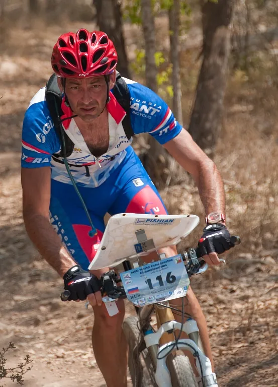
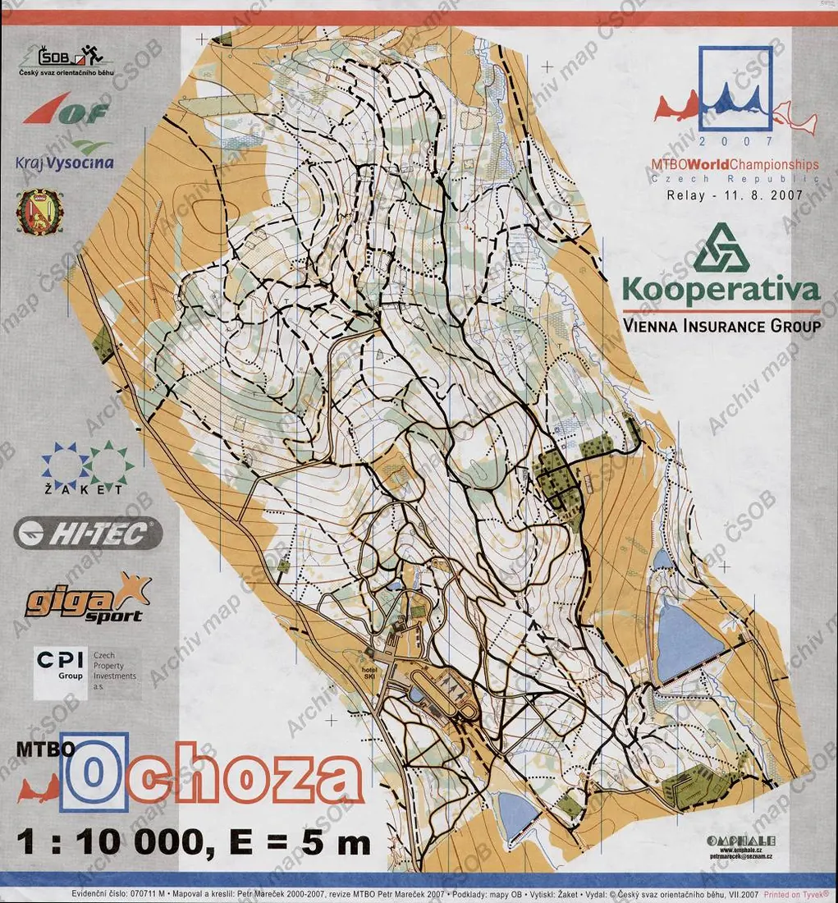
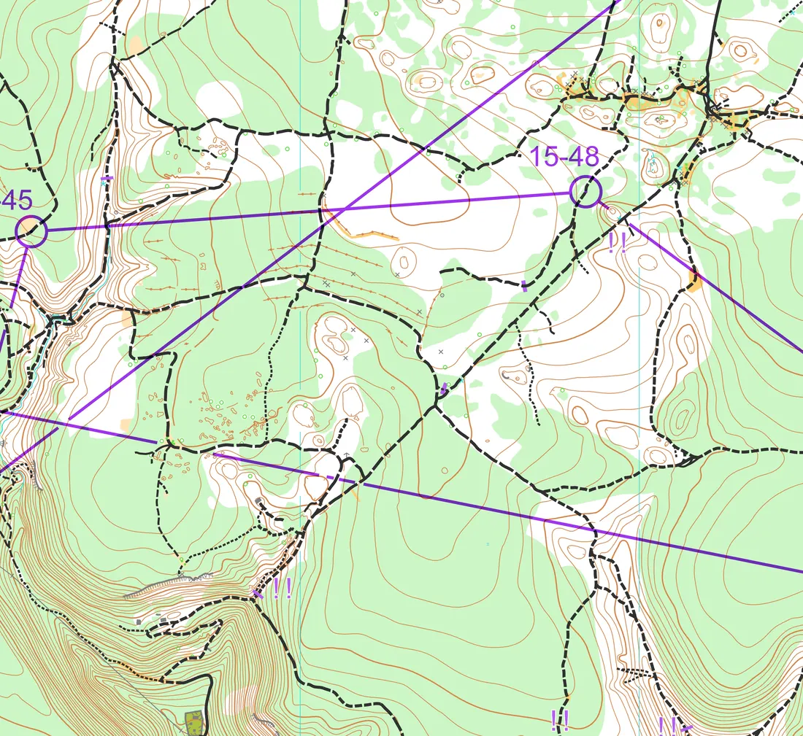
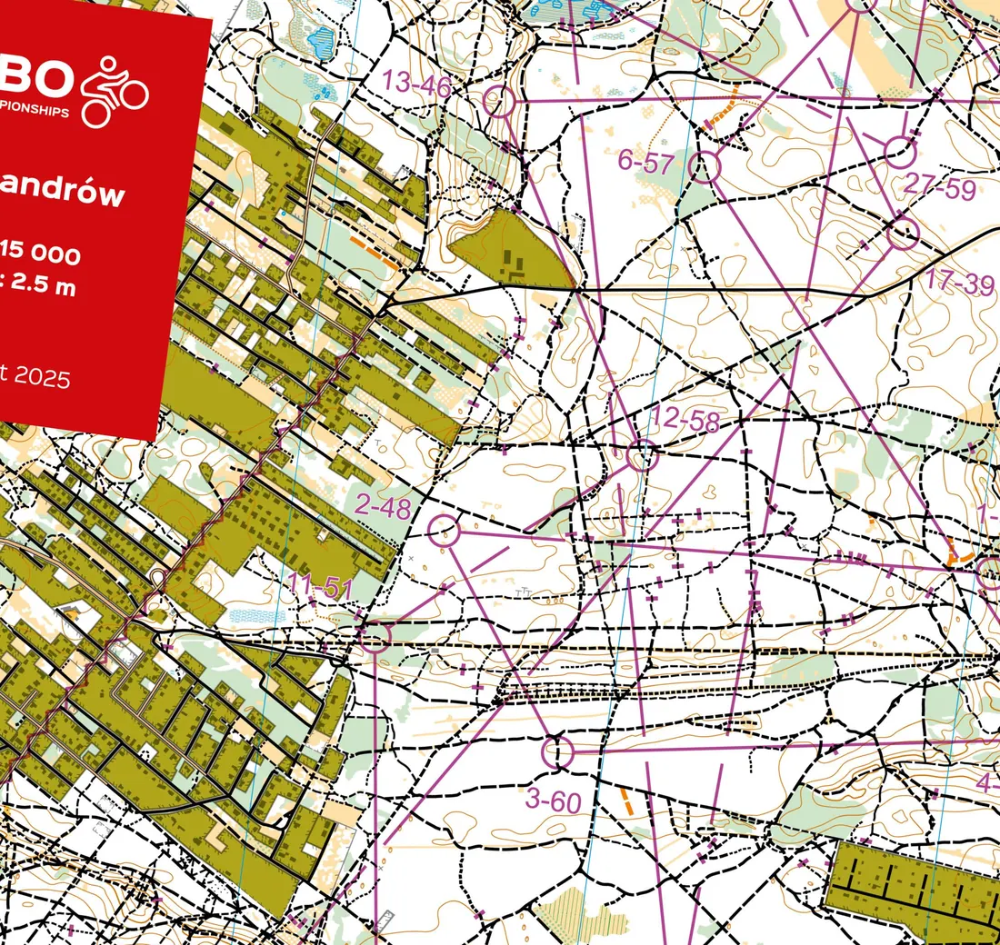
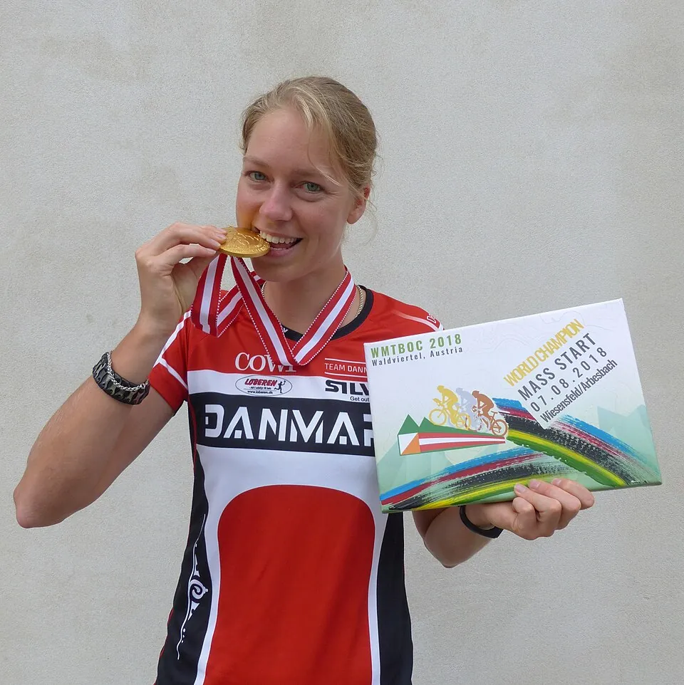
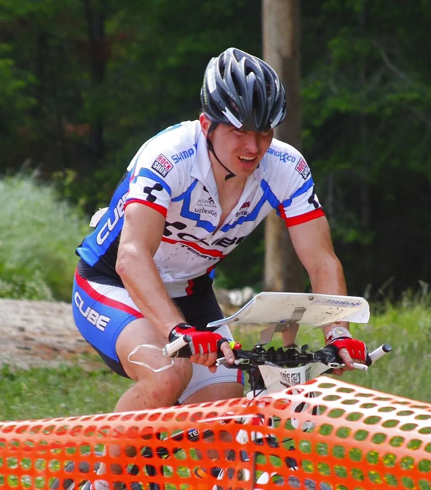
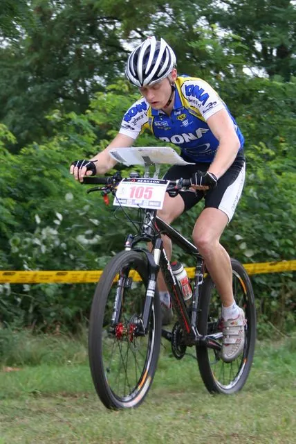
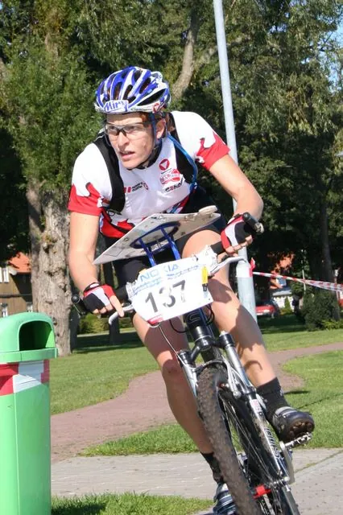
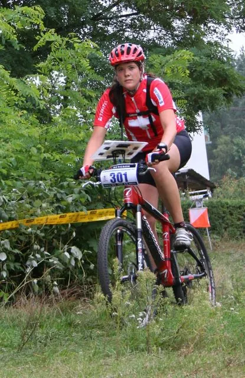

Самая молодая дисциплина
Велоориентирование (MTBO) — самая молодая из четырёх дисциплин Международной федерации ориентирования (IOF). Гонщик едет только по дорогам и тропам, сходить с них нельзя; карта закреплена на руле в поворотном планшете, а её масштаб — от 1:5 000 до 1:30 000. На карте показано, насколько проезжаема каждая тропа: легко, медленно, трудно или нельзя. Скорость велосипеда делает чтение карты особенно трудным — решение о пути принимается за секунды до развилки.
Чемпионат мира разыгрывается с 2002 года и с 2004-го проходит ежегодно.
- Первый чемпионат
- 2002, Фонтенбло (Франция)
- Периодичность
- ежегодно с 2004 года
- Дисциплины
- спринт, миддл, лонг, масс-старт (с 2017), эстафета
- Вне Европы
- Австралия 2004, Израиль 2009
2002–2008: становление

Первый чемпионат мира прошёл в июле 2002 года во французском Фонтенбло — в знаменитом лесу с песчаником, известном скалолазам всего мира. Участвовали спортсмены из 29 стран; на длинной дистанции победили финны Юсси Мякиля и Пяйви Томмола, а мужскую эстафету выиграли хозяева.
Второй чемпионат в 2004 году уехал в австралийский Балларат и прошёл в октябре. Там на пьедестал поднялся и российский спортсмен — Виктор Корчагин взял бронзу на миддле. Корчагин — пример ориентировщика-универсала: до этого он был чемпионом мира по ориентированию на лыжах.
В 2005 году в словацкой Банска-Бистрице Руслан Грицан выиграл миддл и лонг, а Корчагин стал вторым на длинной дистанции. В 2006 году в Йоэнсуу золото взяла женская эстафета России (Надия Микрюкова, Анна Устинова, Ксения Черных), в 2007-м в Нове-Место-на-Мораве Ксения Черных выиграла спринт и миддл, а Грицан — снова длинную дистанцию.

2009–2019: золотые годы сборной России
Чемпионат 2009 года в израильском Бен-Шемене — второй и пока последний за пределами Европы. Там мужская эстафета Максим Журкин — Руслан Грицан — Антон Фолифоров впервые стала чемпионской. В 2010 году в Португалии Фолифоров взял свой первый личный титул на длинной дистанции, а эстафета (Грицан, Валерий Глухов, Фолифоров) снова стала чемпионской.
Дальше Грицан и Фолифоров почти десятилетие делили между собой мужские титулы. Грицан выиграл длинную дистанцию в 2012 году в Венгрии, а в 2019-м в Дании — через 14 лет после первого титула. Фолифоров в 2014 году выиграл спринт и лонг, в 2015-м — миддл и лонг, а в 2016 году в Португалии — все три личные гонки: спринт, миддл и лонг.
У женщин в 2014 году в польском Белостоке Ольга Виноградова выиграла длинную дистанцию, а эстафета (Татьяна Репина, Ольга Виноградова, Светлана Поверина) стала чемпионской. Уже под фамилией Шипилова-Виноградова Ольга выиграла миддл 2016 года, 2017-го и 2018-го. Мужские эстафеты России побеждали в 2018 и в 2019 году, а Григорий Медведев выиграл спринт в 2017-м и в 2019-м.
С 2017 года в Вильнюсе в программу официально вошёл масс-старт — общий старт с рассеиванием дистанций, где побеждает тот, кто быстрее не только едет, но и думает в группе.

С 2021 года: новые лидеры

Чемпионат 2020 года в чешском Есенике отменили из-за пандемии. В 2021 году в финском Куортане российские спортсмены выступали как нейтральные; Светлана Фолифорова выиграла масс-старт и миддл. С 2022 года сборная России отстранена от стартов IOF.
С тех пор в числе главных сил — Чехия, Финляндия и Дания. На чемпионате 2025 года в Варшаве финка Руска Саарела выиграла спринт и длинную дистанцию, датчанка Николине Сплитторфф — масс-старт, чешка Мартина Тиховска — миддл; у мужчин чех Войтех Людвик победил в масс-старте и на длинной дистанции, ветеран Криштоф Богар — в спринте, финн Андре Хага — на миддле. Чемпионат 2026 года прошёл в шведской Муре, где финиширует знаменитый лыжный марафон Васалоппет.


Герои




По числу личных золотых медалей (по 2021 год) впереди Антон Фолифоров (9) и Руслан Грицан (7), у женщин — австрийка Михаэла Гигон, финка Марика Хара и швейцарка Кристине Шаффнер (четыре победы на длинной дистанции в 2006–2010 годах). В 2010-х выдвинулись британка Эмили Бенэм, чешка Мартина Тиховска и чех Криштоф Богар, который побеждал и в 2013 году, и в 2025-м.
Смотреть
Источники
Даты, места и составы — Календарь O-Maps; статьи Википедии World MTB Orienteering Championships, Чемпионат мира по спортивному ориентированию на велосипедах; новости IOF на orienteering.sport. Фрагменты карт — Mapový portál ČSOS, GPSSeuranta, TrackSport, TrackCourse; фотографии — Wikimedia Commons (авторы и лицензии указаны в подписях).Все старты серии с протоколами, картами, GPS-трансляциями и видео: в календаре и на странице чемпионата.